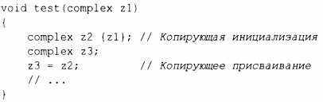

⇐5.1.3 Инициализаторы членов 5.2.1 Копирование контейнеров⇒
По умолчанию объекты могут быть скопированы. Это справедливо для объектов как пользовательских, так и встроенных типов. По умолчанию смысл копирования состоит в почленном копировании: копируется по отдельности каждый член. Например, используем complex из §4.2.1:
Теперь zl, z2 и zЗ имеют одно и то же значение, потому что как присваивание, так и инициализация копируют оба члена.
Разрабатывая класс, мы всегда должны рассматривать, можно ли, и как именно, копировать объект. Для простых конкретных типов почленное копирование часто оказывается корректной семантикой копирования. Для некоторых сложных конкретных типов, таких как Vector, почленное копирование является неправильной семантикой копирования; для абстрактных типов почленное копирование почти никогда не является правильной семантикой.